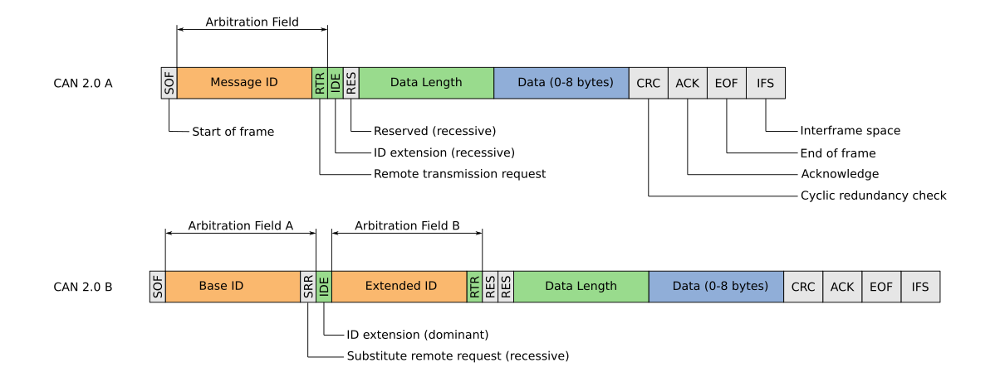

Building a CAN bus library
Published
Over the last few weeks I’ve been doing a lot of work with CAN bus on our car at Manchester Stinger Motorsports. As the car’s electronics take on more responsibility, including sensing, logging, fault handling and control, the need for a robust communication layer becomes apparent very quickly. In this environment, CAN is the obvious choice. It was designed for electrically noisy, distributed systems. This, rather conveniently, describes a racing car.
CAN (Controller Area Network) is an asynchronous multi-master, message-based communication protocol. Nodes share a two-wire differential bus and broadcast frames containing an ID and up to eight bytes of data. Rather than addressing specific devices, messages are tagged with an ID that defines their meaning, and any node that “cares” can listen. Arbitration is handled electrically on the bus itself: if two nodes transmit simultaneously, the frame with the higher-priority identifier continues while the other backs off and retries later.

This isn’t my first time using CAN. I’ve worked with it before on projects like Luciferin, but this is the first time I’ve been closely involved in defining how our own network is structured, rather than simply operating within existing libraries and infrastructure.
On this year’s IC (Internal Combustion) car I was pretty much given free rein to add whatever excess sensing and auxiliary function I felt would be valuable. That meant working alongside projects like the auto-gear shifter, two third-year dissertations (hi Alex and Alex), an existing ECU, and a proprietary datalogger, all expecting to live happily on the same bus.
If these devices are all going to share the same bus, they need to speak the same language. So how do you actually define that shared broadcast protocol?
You start with what you can’t change. In my case, that was the OEM Haltech ECU. Its CAN protocol specification already defined much of the bus architecture for me: 1 Mbit/s classic CAN 2.0A, 11-bit identifiers, predefined message periods, and a fixed signal layout within each frame.
Eleven-bit IDs are best represented in hexadecimal, with the valid range running from 0x000 to 0x7FF. My first task was to carve up this ID space. As mentioned earlier, CAN arbitration is priority-based: lower numerical IDs win. That means identifier allocation is not just organisational; it directly affects behaviour under load. It would be poor practice to assign a very high-frequency message (for example, suspension travel data) a numerically low identifier. Under load, that frame would repeatedly win arbitration, increasing latency for lower-priority traffic and undermining the intended priority structure.
The Haltech ECU occupies several regions of the space, most notably the 0x360–0x477 block and a number of higher IDs in the 0x6F0–0x700 range. Those were treated as reserved from the outset. With that constraint in place, I defined two regions: 0x100–0x1FF and 0x500–0x5FF. The lower of these ranges was reserved for higher-priority custom traffic, while the upper range was used for lower-priority or auxiliary nodes. This leaves 512 unique IDs allocated for custom nodes, certainly more than enough for now.
Defining the bus characteristics and allocating IDs is only useful if those boundaries are respected. Documentation can state exactly how messages should be transferred, but without enforcement those rules can quickly degrade into convention. I therefore needed to introduce guardrails in firmware.
Because the team now builds the majority of its nodes around ESP32 microcontrollers, all CAN traffic flows through the TWAI peripheral. The raw interface is powerful but unforgiving, and expecting every contributor to interact with it correctly was unrealistic. The solution was to build a simplified, opinionated wrapper that both reduced complexity and enforced the architectural decisions automatically. The rest of this post primarily discusses this wrapper; the full code is also available, although it is still subject to change.
The overarching goal was to simplify interaction with the CAN peripheral to a minimal, deliberate surface area. All bus interaction would occur through just five operations:
MSM_CAN::set_hardware_filters(...);
MSM_CAN::init(rx_gpio, tx_gpio);
MSM_CAN::send_msg(id, payload);
MSM_CAN::subscribe(id, callback);
MSM_CAN::unsubscribe(id);The need for this layer becomes obvious once you look at the raw TWAI interface. The controller will happily transmit any valid frame placed into its queue. It does not understand “reserved ID ranges”. It does not understand architectural intent. It will not prevent two nodes from accidentally broadcasting into the same region of the identifier space.
If the ID allocation defined earlier was going to mean anything, those constraints had to be enforced in software.
The first guardrail sits directly in the transmit path. Transmission is restricted to the two custom ranges that I defined earlier:
static constexpr uint16_t TX_RANGE1_START = 0x100;
static constexpr uint16_t TX_RANGE1_END = 0x1FF;
static constexpr uint16_t TX_RANGE2_START = 0x500;
static constexpr uint16_t TX_RANGE2_END = 0x5FF;
static inline bool is_allowed_tx_id(uint16_t id)
{
return ((id >= TX_RANGE1_START && id <= TX_RANGE1_END) ||
(id >= TX_RANGE2_START && id <= TX_RANGE2_END));
}Before a frame is transmitted, the identifier is validated:
esp_err_t send_msg(uint16_t id, const uint8_t data[8])
{
if (!g_initialised)
return ESP_ERR_INVALID_STATE;
if (!is_allowed_tx_id(id))
return ESP_ERR_INVALID_ARG;
// Build and transmit the frame...
}If a node attempts to transmit outside its allocated region, the call fails immediately. The hardware would have allowed it. The firmware does not. That single check is what makes the earlier ID allocation enforceable rather than aspirational.
Transmission then blocks until completion. Frames are not silently queued and they are not dropped without feedback. In a distributed control system, explicit failure is preferable to hidden behaviour.
Reception presents a more subtle problem.
Incoming frames are processed by a dedicated FreeRTOS task. At the same time, application code may call subscribe() or unsubscribe() to modify which identifiers it cares about. Without protection, this creates a race condition: what happens if a frame arrives while a subscription entry is being modified? What if a callback pointer is cleared halfway through a lookup?
To prevent this, subscriptions are stored in a fixed-size table protected by a mutex:
struct SubEntry
{
bool in_use;
uint16_t id;
void (*callback)(uint16_t, const uint8_t[8], uint32_t);
};
static constexpr int MAX_SUBS = 64;
static SubEntry g_subs[MAX_SUBS];
static SemaphoreHandle_t g_subs_mutex = nullptr;There is no dynamic allocation. The table is statically allocated and bounded. If all slots are used, subscribe() returns an error. Memory usage is deterministic and predictable.
When a frame arrives, the RX task performs a lookup under mutex protection:
void (*cb)(uint16_t, const uint8_t[8], uint32_t) = nullptr;
if (g_subs_mutex &&
xSemaphoreTake(g_subs_mutex, portMAX_DELAY) == pdTRUE)
{
const int idx = find_sub_index(pkt.id);
if (idx >= 0)
cb = g_subs[idx].callback;
xSemaphoreGive(g_subs_mutex);
}Crucially, the callback itself is executed outside the critical section:
if (cb)
cb(pkt.id, pkt.data, ts);This separation is deliberate. Holding the mutex while executing user code would risk deadlocks, priority inversion or blocking the receive path entirely. By copying the callback pointer under lock and releasing the mutex before invocation, the RX task remains safe even if application code misbehaves.
The result is a simple mental model for those developing software for our custom nodes: subscribe to an ID, and your callback will fire when that frame appears. Underneath, however, the subscription table and mutex ensure that concurrent modification and reception cannot corrupt the state.
Finally, to reduce repetitive boilerplate when constructing frames, a small set of packing helpers is provided:
inline void pack_u16(uint8_t data[8], uint8_t index, uint16_t value)
{
if (index > 6) return;
data[index + 0] = static_cast<uint8_t>((value >> 8) & 0xFF);
data[index + 1] = static_cast<uint8_t>((value >> 0) & 0xFF);
}They enforce a consistent big-endian encoding convention across the network. Signal semantics remain the responsibility of the application layer; the library’s role is transport discipline, not interpretation.
The library does not attempt to reinvent CAN. It does not implement a higher-layer protocol. Its purpose is narrower and more deliberate: encode architectural decisions directly into the interface through which the bus is accessed. By reducing the interaction surface to five operations and embedding guardrails at the boundary, the structure defined during ID allocation becomes difficult to violate accidentally as the system evolves.
Once multiple nodes depend on each other’s data, structure stops being optional. It would have been easier for me to define the ID ranges and leave interaction with the TWAI driver to individual implementation. Instead, the boundaries were built into the interface itself. The ID allocation, the guardrails and the wrapper impose discipline that does not rely on institutional memory or personal oversight. The result is a network whose structure persists, even as contributors change.